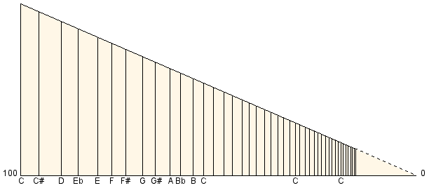

Le principe demande de connaître au départ trois nombres, savoir :
- le diamètre du tuyau le plus gros.
- le diamètre du tuyau le plus petit.
- le nombre de notes qu'il faut établir.
Dom Bedos1 appelle diapason le
diagramme de base servant à déterminer les diamètres ou longueurs des tuyaux. Il
préconise une façon de faire très précise pour la conception de ce diapason.
En partant d'une segment de droite de longueur égale au premier tuyau du jeu désiré,
et en suivant un algorithme
décrit dans la table de
l'article 215
page 61, on arrive à diviser l'octave d'une façon à peu près progressive.
Reprenons le calcul en fixant la plus grande longueur, C, à 100 mm.

| C est connu, |
C = |
100,0000 |
| Les 3/4 de C, donnent la quarte, qui est |
F = |
75,0000 |
| Les 2/3 de C, donnent la quinte, qui est |
G = |
66,6666 |
| Les 4/3 de G, donnent la quarte, en descendant |
D = |
88,8888 |
| Les 2/3 de D, donnent la quinte, |
A = |
59,2592 |
| Les 4/3 de A, donnent la quarte, en descendant |
E = |
79,0123 |
| Les 2/3 de E, donnent la quinte, |
B = |
52,6748 |
| Les 3/4 de F, donnent la quarte, |
B♭ = |
56,2500 |
| Les 3/2 de B♭, donnent la quinte, en descendant |
E♭ = |
84,3750 |
| Les 3/4 de E♭, donnent la quarte, |
G♯ = |
63,2812 |
| Les 3/2 de G♯, donnent la quinte, en descendant |
C♯ = |
94,9218 |
| Les 3/4 de C♯, donnent la quarte, |
F♯ = |
71,1914 |
Rétablissons les notes dans l'ordre et calculons leurs rapports entre-elles. Pour
cela, on sait que les longueurs traitées ne sont pas celles des intervalles entre les notes mais
la distance entre la position de la note et celle de l'extrémité du graphique (de la droite).
Il faut donc soustraire à toutes ces longueurs la moitié de celle de départ (50),
puis, mesurer les longueurs des intervalles entre les notes avant de pouvoir en calculer leurs rapports
deux à deux.
| |
Octave
seule
| Longueurs
des intervalles
= note(x) - note(x + 1)
| Rapports des intervalles
= longueur(x) / longueur(x + 1)
|
| 1 |
C |
100,0000 |
- 50 = |
50,0000 |
- 44,9219 = |
5,078125 |
/ 6,032986 = |
0,8417266187 |
soit : 117 / 139 |
| 2 |
C♯ |
94,9219 |
- 50 = |
44,9219 |
- 38,8889 = |
6,032986 |
/ 4,513889 = |
1,3365384615 |
soit : 139 / 104 |
| 3 |
D |
88,8889 |
- 50 = |
38,8889 |
- 34,3750 = |
4,513889 |
/ 5,362654 = |
0,8417266187 |
soit : 117 / 139 |
| 4 |
E♭ |
84,3750 |
- 50 = |
34,3750 |
- 29,0123 = |
5,362654 |
/ 4,012346 = |
1,3365384615 |
soit : 139 / 104 |
| 5 |
E |
79,0123 |
- 50 = |
29,0123 |
- 25,0000 = |
4,012346 |
/ 3,808594 = |
1,0534979424 |
soit : 256 / 243 |
| 6 |
F |
75,0000 |
- 50 = |
25,0000 |
- 21,1914 = |
3,808594 |
/ 4,524740 = |
0,8417266187 |
soit : 117 / 139 |
| 7 |
F♯ |
71,1914 |
- 50 = |
21,1914 |
- 16,6667 = |
4,524740 |
/ 3,385417 = |
1,3365384615 |
soit : 139 / 104 |
| 8 |
G |
66,6667 |
- 50 = |
16,6667 |
- 13,2813 = |
3,385417 |
/ 4,021991 = |
0,8417266187 |
soit : 117 / 139 |
| 9 |
G♯ |
63,2813 |
- 50 = |
13,2813 |
- 9,2593 = |
4,021991 |
/ 3,009259 = |
1,3365384615 |
soit : 139 / 104 |
| 10 |
A |
59,2593 |
- 50 = |
9,2593 |
- 6,2500 = |
3,009259 |
/ 3,575103 = |
0,8417266187 |
soit : 117 / 139 |
| 11 |
B♭ |
56,2500 |
- 50 = |
6,2500 |
- 2,6749 = |
3,575103 |
/ 2,674897 = |
1,3365384615 |
soit : 139 / 104 |
| 12 |
B |
52,6749 |
- 50 = |
2,6749 |
- 0,0000 = |
2,674897 |
/ 2,539063 = |
1,0534979424 |
soit : 256 / 243 |
| 13 |
C |
50,0000 |
- 50 = |
0,0000 |
5,078125 / 2 = |
2,539063 |
|
D'où il ressort qu'il y a donc, dans la division graphique de Dom Bedos,
trois rapports distincts entre les intervalles de notes :
- 0,8417266187, soit 117 / 139, rapport utilisé pour passer
d'une naturelle à une feinte du clavier.
- 1,3365384615, soit 139 / 104, rapport utilisé pour passer
d'une feinte à une naturelle du clavier.
- 1,0534979424, soit 256 / 243, rapport utilisé pour passer
d'une naturelle à une naturelle du clavier.
Il s'en suit que le rapport de (117 / 139) × (139 / 104)
présent dans les intervalles de tons Do-Ré, Ré-Mi, Fa-Sol,
Sol-La et La-Si est égal à 16263 / 14456 et peut se réduire à
9 / 8. Quelle merveilleuse démonstration d'une division purement pythagoricienne !
Mais il faut rappeler qu'en procédant par quinte et quarte successives, il eut été
surprenant que les chiffres se trouvent en opposition avec l'évidence... Cela démontre surtout
qu'il n'y a quasiment aucune différence de résultat entre ce procédé décrit
à la fin du xviiie siècle et celui
exposé dans le traité d'Henri-Arnault de Zwolle2
dans la première moitié du xve.
Ce n'est pas la première fois que l'on rencontre un tel archaïsme dans ce domaine chez le
bénédictin mauriste ; on peut le souligner aussi quand il décrit le
tempérament de l'orgue.
Cette façon de procéder a par ailleurs été décrite avec quelques
variantes. Dès 1636, Mersenne
donne toutes les divisions qui lui semblent possibles (onze tout de même...) et commence, pour la
première, par une division étonnamment tempérée :
« Or cette table contient vnze colomnes, qui monstrent la longueur &
la largeur des tuyaux, dont la premiere fait voir les treize degrez du Diapason temperé ; qui a
ses douze demy-tons esgaux, ou quasi esgaux. [...] Cette premiere colomne est diuisée en douze
interualles ou en treize degrez, dont chacun a son nombre particulier, de sorte que les vnze nombres qui
sont entre 1000, & 500 representent les vnze moyennes proportionnelles dont i'ay parlé dans
le traité du Luth, & ailleurs. »3
En 1717, Christophoro Alberto Sinn4 publie
en Allemagne des tables logarithmiques et une méthodologie pour établir une division horizontale
à progression égale. En France, dans la seconde moitié du
xviiie siècle,
l'Encyclopédie publie un
article diapason où
il est une fois encore être très clairement stipulé la nécessité de
mathématiser le tracé :
« Quoique nous tolérions la pratique des facteurs, il faut
cependant observer qu'il est beaucoup mieux de ne s'en point servir ; car, quoique les tuyaux soient
amenés à leur longueur en les coupant, lorsqu'on les accorde, il n'est pas moins vrai
qu'ils ne sont plus des corps semblables, puisqu'on ne peut réformer le diapason vicieux des
grosseurs : il est pourtant requis que les tuyaux aient leurs grosseurs, suivant le diapason,
c'est-à-dire, qu'ils soient semblables, pour qu'ils rendent la plus parfaite harmonie qu'il
est possible. »5
|
On remarquera toutefois avec amusement que la table des nombres publiée dans
l'article de l'Encyclopédie, et destinée à établir une division
égale, est loin d'avoir la précision des valeurs publiées par Mersenne
presque cent cinquante ans plus tôt, puisqu'elles approchent, elles, de très
près la racine douzième de deux (1,0594630943593)...
|
|
| |
L'Encyclopédie |
L'Harmonie Universelle |
Valeurs
publiées. |
Rapports
inter-notes. |
Valeurs
publiées. |
Rapports
inter-notes. |
| C |
100.000 |
1,06666666667 |
1000 |
1,05932203390 |
| C♯ |
93.750 |
1,05468618164 |
944 |
1,05829596413 |
| D |
88.889 |
1,06667226669 |
892 |
1,05938242280 |
| E♭ |
83.333 |
1,04166250000 |
842 |
1,06045340050 |
| E |
80.000 |
1,06666666667 |
794 |
1,05866666667 |
| F |
75.000 |
1,05468914795 |
750 |
1,05932203390 |
| F♯ |
71.111 |
1,06665966670 |
708 |
1,05988023952 |
| G |
66.667 |
1,06667200000 |
668 |
1,06031746032 |
| G♯ |
62.500 |
1,04166666667 |
630 |
1,05175292154 |
| A |
60.000 |
1,06666666667 |
599 |
1,06583629893 |
| B♭ |
56.250 |
1,05469409184 |
562 |
1,05838041431 |
| B |
53.333 |
1,06666000000 |
531 |
1,06200000000 |
| C |
50.000 |
|
500 |
|
|
La traduction mathématique de ce procédé graphique, tant dans le cas
d'une division horizontale inégale qu'égale, requiert une
fonction spécifique qu'il est très simple de
mettre en œuvre dans un tableur. Pour illustrer ce qui précède, on pourra avantageusement
consulter le fichier tableur au format ODS
(OpenOffice.org) ou au
format XLS (Micro$oft Excel), ou, plus simplement, remplir le formulaire
de l'illustration JavaScript ci-dessous qui calcule 61 notes selon ce procédé.
Enfin, par cette illustration, on remarquera à quel point il ne se trouve que
très peu de différence dans les valeurs finales selon que l'on choisisse une division
horizontale égale ou suivant le modèle de Dom Bedos puisque, dans le cas du 8 pieds du
bénédictin (premier do : 157,5 mm., cinquième do :
21,4 mm.), la différence maximale n'est que de 76 centièmes de millimètre
pour le premier do dièze. Cette différence s'estompe évidemment à
proportion dans l'aigu. Cela démontre bien que la régularité de la division horizontale
importe en fait assez peu dans la mesure entendue où elle est toutefois à-peu-près
régulière.
|
| 1 | C | - |
| 2 | C♯ | - |
| 3 | D | - |
| 4 | E♭ | - |
| 5 | E | - |
| 6 | F | - |
| 7 | F♯ | - |
| 8 | G | - |
| 9 | G♯ | - |
| 10 | A | - |
|---|
| 11 | B♭ | - |
|---|
| 12 | B | - |
|---|
| 13 | C | - |
|---|
| 14 | C♯ | - |
|---|
| 15 | D | - |
|---|
| 16 | E♭ | - |
|---|
| 17 | E | - |
|---|
| 18 | F | - |
|---|
| 19 | F♯ | - |
|---|
| 20 | G | - |
|---|
| 21 | G♯ | - |
|---|
| 22 | A | - |
|---|
| 23 | B♭ | - |
|---|
| 24 | B | - |
|---|
| 25 | C | - |
|---|
| 26 | C♯ | - |
|---|
| 27 | D | - |
|---|
| 28 | E♭ | - |
|---|
| 29 | E | - |
|---|
| 30 | F | - |
|---|
| 31 | F♯ | - |
|---|
| 32 | G | - |
|---|
| 33 | G♯ | - |
|---|
| 34 | A | - |
|---|
| 35 | B♭ | - |
|---|
| 36 | B | - |
|---|
| 37 | C | - |
|---|
| 38 | C♯ | - |
|---|
| 39 | D | - |
|---|
| 40 | E♭ | - |
|---|
| 41 | E | - |
|---|
| 42 | F | - |
|---|
| 43 | F♯ | - |
|---|
| 44 | G | - |
|---|
| 45 | G♯ | - |
|---|
| 46 | A | - |
|---|
| 47 | B♭ | - |
|---|
| 48 | B | - |
|---|
| 49 | C | - |
|---|
| 50 | C♯ | - |
|---|
| 51 | D | - |
|---|
| 52 | E♭ | - |
|---|
| 53 | E | - |
|---|
| 54 | F | - |
|---|
| 55 | F♯ | - |
|---|
| 56 | G | - |
|---|
| 57 | G♯ | - |
|---|
| 58 | A | - |
|---|
| 59 | B♭ | - |
|---|
| 60 | B | - |
|---|
| 61 | C | - |
|---|
|